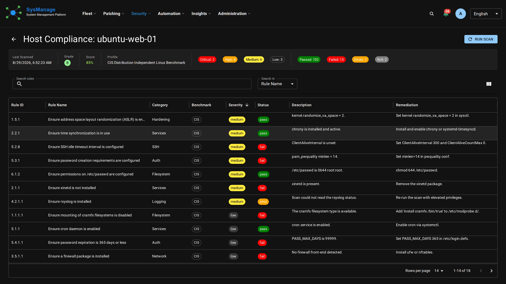
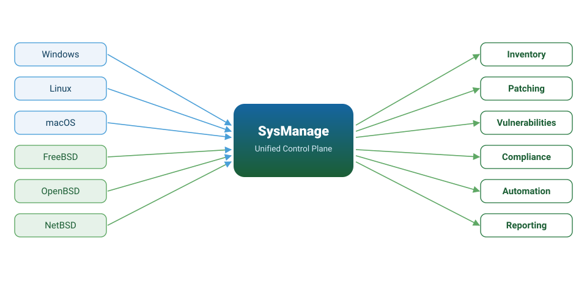
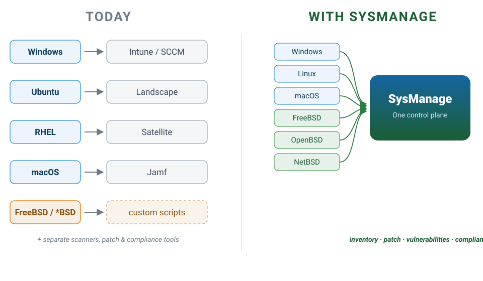
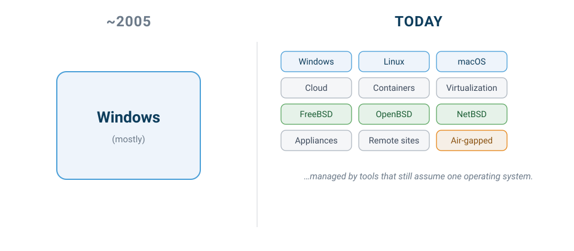
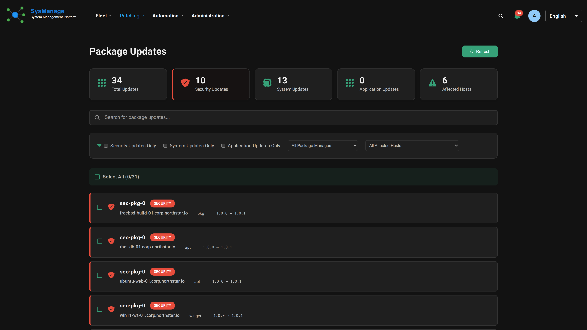
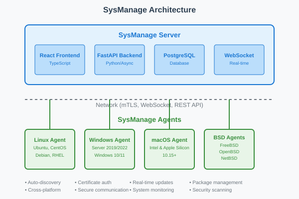

One control plane for your entire infrastructure
Manage Windows, Linux, macOS, FreeBSD, OpenBSD, and NetBSD from a single platform. Infrastructure teams don't manage operating systems — they manage fleets.

The Unified Control Plane
You don't manage operating systems. You manage a fleet.
Every managed system raises the same questions, whatever runs on it: what's installed, is it vulnerable, is it compliant, does it need updating, what changed and who changed it? Those questions don't change when the operating system does — so SysManage is built around the questions, not the operating systems. One control plane runs Windows, Linux, macOS, and the BSDs as a single environment.

We've deliberately retired "single pane of glass." A unified control plane is the more honest description: the one place a heterogeneous fleet is administered, secured, and reported on as one environment.
One tool per operating system doesn't scale
A mixed fleet forces teams to assemble a toolchain out of single-purpose products: one for Windows, another for each Linux, another for macOS, another (or nothing) for BSD, plus separate scanners and compliance tools. Six consoles, six licenses, six things to learn — and no single source of truth.

Today, a different tool for every platform. With SysManage, one control plane for all of them.
Why organizations choose SysManage
Teams don't buy infrastructure software for features. They buy outcomes.
Fewer vendors, lower cost
Consolidate several single-OS tools into one platform and cut licensing spend.
Less operational complexity
One interface, one deployment model, one security model across the whole fleet.
Lower key-person risk
Your team learns one system instead of six.
Stronger security posture
Consistent inventory, patching, and vulnerability visibility on every operating system.
Simpler compliance
Reporting that spans the whole environment instead of stopping at an OS boundary.
Faster remediation
Coordinated updates across platforms with a defensible audit trail.
Standardized operations
The same processes and controls regardless of platform.
Infrastructure became heterogeneous. Management software didn't.
Twenty years ago, most shops were mostly Windows. Today a single enterprise runs Windows, several Linux distributions, macOS, cloud and containers, virtualization, appliances, the BSDs, remote offices, and air-gapped networks. The infrastructure changed. Most of the tools managing it didn't.

Finally, first-class BSD support
Critical infrastructure across networking, storage, hosting, telecom, research, and security runs on FreeBSD, OpenBSD, and NetBSD — yet mainstream vendors effectively ignore them. SysManage manages all three as equals to Windows, Linux, and macOS: one agent, one console, the same lifecycle, patching, compliance, and vulnerability features on every platform. That's a sentence no other vendor gets to write.
Platform reach is only part of the story. Our comparison is a feature-by-feature look at how SysManage stacks up against Ansible, Puppet, Salt, Chef, Landscape, and Satellite — patch & content management, content views & lifecycle promotion, vulnerability scanning, compliance, air-gap, federation, and more.
Compare SysManage vs. Ansible, Puppet, Salt, Chef, Landscape & Satellite →One platform, every capability
Everything below works the same way on every supported operating system.
Cross-Platform Support
Manage Linux, Windows, macOS, FreeBSD, OpenBSD, and NetBSD systems from a single interface.
One workflow to learn, not six.
Real-Time Monitoring
WebSocket-based real-time communication for instant system updates and monitoring.
See changes as they happen, fleet-wide.
Enterprise Security
JWT authentication, mTLS, role-based access control, and built-in security scanning.
One coherent security picture across every OS.
Package Management
Remote software installation, updates, and management across all supported platforms.
Coordinate remediation across a mixed fleet.
Multi-Language Support
Native support for 14 languages including English, Spanish, French, German, and more.
Global teams from day one, with no localization project.
Modern Web UI
Responsive React-based interface with real-time dashboards and detailed reporting.
Answer "what do we run, and what state is it in?" in one place.
Database High Availability
Run against a highly-available PostgreSQL cluster and survive a primary failover with no manual intervention — automatic reconnect, bounded promotion-gap retry, and health-gated routing, with zero primary-discovery guesswork.
Survive a database failover with no manual intervention.
Why now
Several long-term trends make this the moment for a unified control plane.
Infrastructure diversity
The number of operating systems under management rises every year, not down.
Security is operational
Inventory, patching, and vulnerability management are now core security controls, not housekeeping.
Vendor consolidation
Organizations are actively cutting the number of vendors and contracts they manage.
Fewer people, bigger fleets
Teams manage more with less. Automation is no longer optional.
Give AI the whole picture
With the whole fleet in view, AI lets admins manage far more systems — but only when it can see the entire environment, not six isolated consoles.
SysManage Professional+
AI-powered health analysis, vulnerability scanning, and enterprise features.
Start free. Grow as you go. Stay on-prem, move to the hosted SaaS, or deploy fully air-gapped — the same platform and the same workflow at every step.
Community
Full-featured system management for individuals and small teams.
- ✓ Cross-platform support
- ✓ Real-time monitoring
- ✓ Package management
- ✓ Security scanning
- ✓ Firewall management
- ✓ Unlimited hosts
Professional
AI-powered insights and analysis for growing organizations.
- ✓ Everything in Community
- ⭐ AI Health Analysis
- ⭐ Health Score History
- ⭐ Advanced Monitoring
- ⭐ Custom Reports
- ⭐ Priority Support
Enterprise
Complete solution for large-scale enterprise infrastructure.
- ✓ Everything in Professional
- ⭐ Vulnerability Scanning
- ⭐ Compliance Reports
- ⭐ SSO Integration
- ⭐ Advanced RBAC
- ⭐ SLA Guarantee
Enterprise SaaS
The multi-tenant, hosted edition — manage many isolated fleets from one platform.
- ✓ Everything in Enterprise
- ⭐ Multi-tenant — many isolated fleets
- ⭐ A dedicated database per tenant
- ⭐ OpenBAO-brokered per-tenant credentials
- ⭐ Per-tenant data residency & deletion
- ⭐ Self-service tenant provisioning
Package Update Management
Keep your entire infrastructure up-to-date with SysManage's update management. Monitor available updates across all platforms and apply them remotely with confidence.

Quick Start
Architecture Overview
Server Components
- FastAPI Backend - Python-based REST API with async support
- React Frontend - Modern TypeScript-based web interface
- PostgreSQL Database - Reliable data storage with migration support
- WebSocket Engine - Real-time communication with agents
Agent Features
- Lightweight Design - Minimal resource footprint
- Auto-Discovery - Automatic server detection on the network
- Secure Communication - mTLS and certificate-based authentication
- Cross-Platform - Native support for all major operating systems
